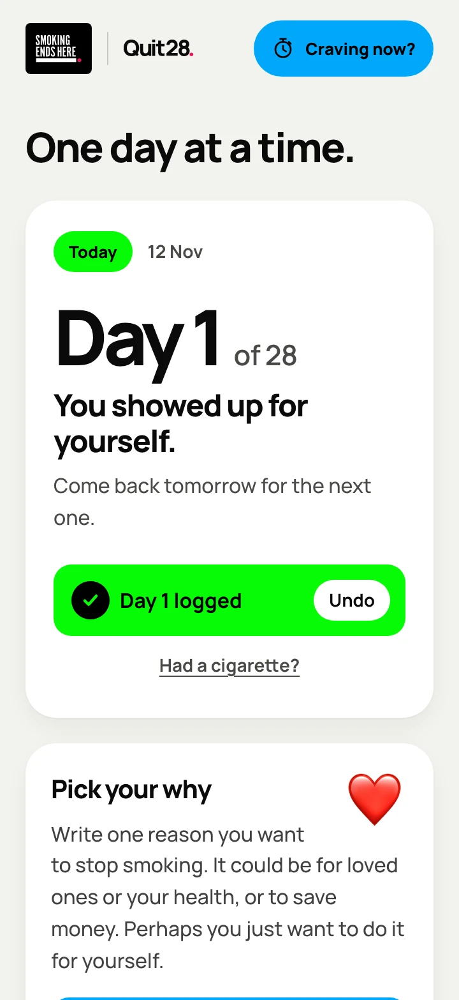
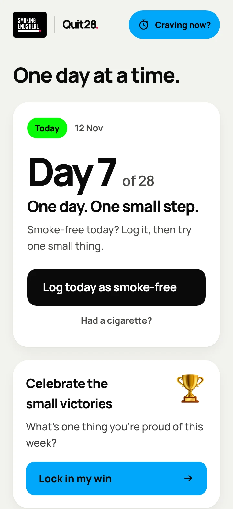
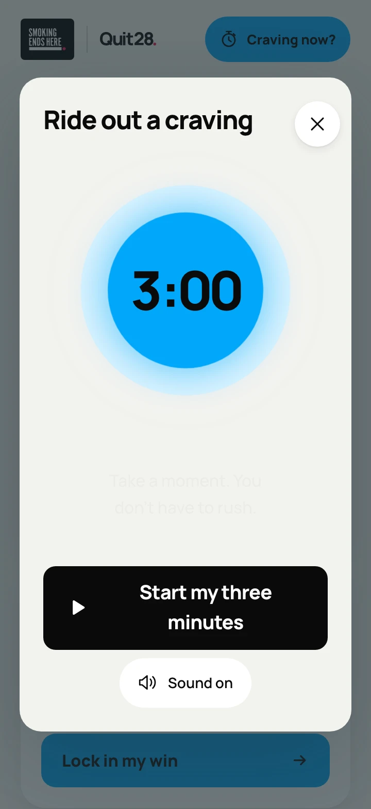

Quit28
A 28-day quit plan that runs in the browser. Pick a first day, log each smoke-free day, and open one small tip or tool a day.
- Role
- UX and visual design, build, film and reporting
- Client
- Smoking Ends Here, for Champs and the NHS
- When
- August to October 2026
One day at a time, four screens
-

1Pick your first day
-

2Log the day
-

3One small thing a day
-

4Help when a craving hits
The first week
19 to 26 October 2026. Anonymous counts per phone, not per person.
Two in three who saw the welcome never pressed Start. That’s the next thing to work on.
17
smoke-free days logged
29
opened “Keep your why close”, the most-used tool
5
clicked through to a stop smoking service or the NHS finder